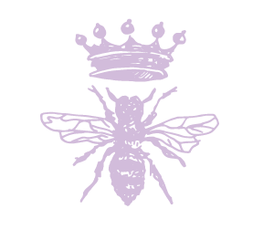

La pollinisation est un phénomène de reproduction entre les plantes femelles et les plantes mâles. Elle peut se faire par le vent, les oiseaux ou les chauves-souris. Mais pour la plupart des cas, ce sont les insectes qui y jouent un grand
rôle. Cette pollinisation est indispensable pour fabriquer du miel de Manuka par exemple. Pour en savoir encore plus, découvrez dans cet article les différentes étapes de la pollinisation.
